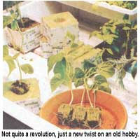
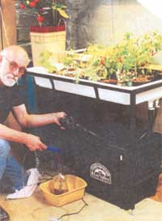
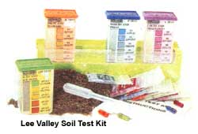
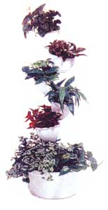
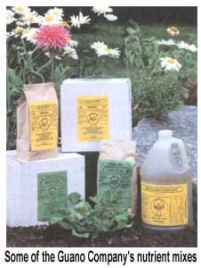
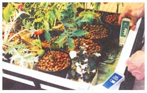
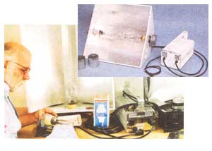
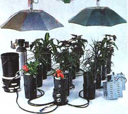
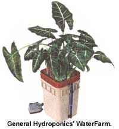
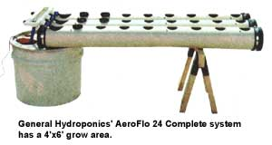

Total-Control Indoor Gardening With Modern Hydrop
By John Vivian
October/November 1998
GARDEN & YARD
Please don't skip this article on the assumption that it's just one more wildly inflated puff job promising GIGANTIC YIELDS FROM ONE SQUARE FOOT OR TOMATOES THE SIZE OF MELONS from some AMAZING NEW INDOOR GARDENING SYSTEM I Here is the plain truth about modern hydroponics techniques and equipment.
It's a sad fact that we home gardeners (who spend billions every year on North America's number one productive pastime) are exposed to more harmless quackery, hype, and exaggerated promises than any consumer group but dieters and black-bass fishermen. And no area of gardening has been subject to more shameless huckstering than hydroponics: the art and science of growing plants in a sterile flowing nutrient bath under high intensity sunlamps.
But every year, a fresh crop of tabloid ads appears for the latest indoor "magic garden"-a flimsy plastic planter hiding some kind of worthless patent-pending plumbing gimmick. You fill it with "magic soil," add "magic seed," dose it with "magic food," set it in a sunny window or under a feeble little fluorescent "magic light," and wait for "magic crops" that never happen. In truth, there is no magic to modern home hydroponics. And none needed. The equipment and skills employed are much the same as you've likely used in setting up and managing a plant-filled tropical-fish aquarium: a straightforward mix of elementary plant science, practical and easily understood electric water-pump and lighting technology, all leavened with the gardener's gentle art. Hydroponics works beautifully with nearly any flower or food plant ... and can yield flowers and produce in a fraction of the area and in about one-third less time than in the very best outdoor gardening year. Honest!
Over the last two decades, the development of reliable techniques and instructional materials for amateurs, as well as innovative homescale adaptation of professional greenhouse equipment, has made hydroponics readily available to home gardeners at a cost that may be high initially, but that will be repaid with year-round fresh vegetables of matchless quality and small fruit that would cost you $2.50 a pound in any store.
Picking Your Rooting Medium
SUPERIOR PRODUCER:
• Year-round
• In any climate
• In 1/4 the space
• In 2/3 the growing time
In nature, a young plant sinks roots deep and spreads them wide into the surrounding sod to support stem and leaves and to access water, oxygen, and food. The tough fibrous main stem and branch roots anchor the plant against weather and browsing animals. To get water along with the mineral nutrients dissolved in it, the plant sends out millions of fragile microscopic feeder-root hairs-minuscule tubes of thin, semipermeable membrane through which water molecules can pass. In nutrient-short soil, or where competing roots from neighboring plants abound, or where the above-ground structure is trodden or pulled frequently by feeding livestock, the plant will devote energy to growing a stronger root system rather than to producing the edible leaves, stems, or fruits that you want for supper.
In hydroponics, none of these natural stresses occur. A plant will grow just enough root to keep its stem immobile and will generate the minimum of feeder roots needed to absorb food-the nitrogen (N), potassium (K), and phosphorous (P) that are familiar to gardeners ... as well as a dozen or two other minerals. In hydroponics, the plant doesn't have to extract nutrients from surrounding soil minerals; a balanced diet is provided in ready-to-absorb form in its nutrient bath. But every agitation of the stem will encourage unneeded root production; the plant's base must be firmly supported from the day the seed sprouts.
FRESH TOMATOES AND
CUCUMBERS ALL WINTER LONG, In
two months less time, Lettuce in just
four weeks
Peat moss, sawdust, wood chips, chipped bark, sand, gravel and crushed rock, gardener's heat-expanded mineral soil conditioners (such as perlite and vermiculite mixed with sand), expanded clay pellets, and other chemically stable media are used as hydroponic rooting media with varying degrees of success. Coarse sand is most popular where it's most abundant, in desert areas, and works adequately. Sawdust (most commonly used in logging country) and peat do not drain well and can waterlog and rot. Both are naturally acidic. Some gravels contain limestone that will bias pH; they can contain soil, decayed vegetation, and plant pathogens as well. The manufactured soil conditioners are sterile, pretty much pH-neutral, and all-natural; perlite consists of little white popcorn-like puffs made by heat-expanding a volcanic rock that is high in silica; vermiculite is made much the same way from mica. Very lightweight, they will blow around when dry and can waterlog. They also break down relatively quickly.
Presenting none of these problems, and widely-used for small cuttings and seedgrown plants, is rockwool: fibers spun from melted natural rock minerals and formed into a mat or blocks. Introduced to North America from Holland as recently as 1985, horticultural-grade rockwool is made from virgin basalt rock (hardened volcanic lava) that is mixed with a limestone flux and melted to 3000°F in a coke oven, much as steel is made from iron. The (re-)molten lava is then spun out into thin fibers that are coated with a separating/wetting agent, bundled with strands parallel and vertical, and pressed into mats or cubes in several sizes or sold loose as flock.
Inch-square seedling-size cubes with a seed pit in the center come 98 to a 10" x 20" block that fits perfectly into a standard propagating tray. "Gro-squares" are 4" cubes that have a hole in the middle to accept a seedling cube. Some brands are enclosed in a thin paper sheet to keep algae from growing. At less than a dime apiece for the inch-size and 50 cents for the 4"-square size, rockwool is cheaper than those little compressed- peat- in -plastic-mesh discs or than a plastic pot and potting -soil mix. Created at a rock-melting temperature, rockwool is sterile, so cannot introduce weed seeds, mold spores, or pest organisms. Unlike slag-based insulating rockwool, it is pH-neutral and chemically inert. Best of all, it is over 90% air, and its fibrous structure draws in water quickly by capillary action. Most of the water drains out quickly as well, keeping roots moist but preventing water logging. Blocks can be separated slightly in the nutrient solution so roots will self-prune. Then roots of adjoining seedlings won't intermingle and be lost when plants are separated. After harvest, you can gently pull old roots from wet cubes, boil or steam, and then reuse them till they wear out. Grodan is a popular brand, manufactured in Denmark, England, and Canada. A dust mask and gloves are recommended to handle loose rockwool flock, as it can be an irritant. Though rockwool is widely available in the U.S. through virtually every hydroponics mail order company, it is not without its detractors. The runoff from daily rockwool use as well as its disposal have been suggested as culprits in groundwater contamination in Europe and its use is actually in decline there.
Even better as a rooting medium, but with none of the controversial baggage, is a newly available milled coconut husk fiber. Called Cocopeat or Grow Bricks/GroBrix, it is a rich earth brown and soft to the touch when moistened-much like peat moss-but is a by-product of copra production (coconut grown for its rich oil, which is pressed from the nut meat and used in fattening foods and luxurious soaps and unguents) in the tropics. It is a totally natural organic material. But having grown 30 feet up in a coconut palm and kept uncontaminated, the horticultural grade is free of weed seeds, as well as fresh waterborne or soil organisms that could compromise a hydroponics system. It comes ultracompressed into brick-sized 20 oz. blocks that expand to form eight or more quarts (liters) of mossy plant bedding when wetted. A brick costs less than $3.
For use as a holding medium for coconut fiber or rockwool starting cubes, many systems employ pellets made from ground, shaped, and fired clay or shale (mudrock), both of which are abundant and fully natural. They are also cheap as dirt, which is what they are. Pellets are spheres about a half-inch in diameter that are brick red on the outside and dark gray and porous-looking on the inside. Geolote, Grorox, and Hydron are common names, made in Europe and Australia. A similar product, formed into irregular shapes rather than spheres, comes from Israel. All are highly porous, lightweight, and mostly air, and so absorb, retain, and drain water readily. They are also sterile, of neutral pH, and chemically inert. Typically, plants are started in rockwool cubes and transferred to water tables or larger pots packed with pellets. Infinitely reusable and recyclable, it sells for under a dollar a quart (liter).
Water and Air
As in nature, it's in water absorbed largely through their roots that your hydroponic plantings, obtain most of the minerals they need to groW, the fluid they need to sustain life, and some of the atmospheric gasses that figure in "transpiration"-the proper name for plants' way of breathing (where, as you know, green plants use carbon dioxide and emit oxygen-the reverse of animal life).
We sprout seeds in a popular starter set (we got ours from Johnny's Selected Seeds of Albion, Maine) that consists of a standard propagating tray with a clear plastic dome on it, set on a metal rack over an office worker's foot heating mat. For postgermination growth, we keep plant tables warm with soil-heating cables stapled to plywood sheets.
In winter, we keep room temperatures in the 50s°F or 60s°F-lower than many plants like, so I get warm air to the growing area from the wood stove with a ceiling fan and with small muffin fans set inside air ducting (sometimes in cold snaps, using flexible clothes-dryer duct hose just laid on the floor). The lamps I use have a vented metal reflector hooked to dryer-vent hose and a 265 cubic-foot-minimum squirrel cage blower. If the room is too warm, heat from the lamps is blown outdoors. In cold weather, it can be directed under the plant growing table.
I have little $10 digital humidity-gauge/thermometers all over the place. Frequent water baths, transpiration, and a steaming kettle on the wood stove in winter keep the relative humidity at a comfortable (for people and plants) 40% or higher in winter. Relative humidity is the percentage of air's potential carrying capacity at a given temperature; dew point is the percentage at which water vapor precipitates out of the air as fog or rain. If you boil too much water into the air, you'll exceed the dew point, and water droplets will accumulate on every cool surface and encourage the growth of mildew everywhere-bad news for hydroponic plantings.
Plants suffer as much as humans from excessive heat. In northern New England, we seldom have overheating problems, but a large window fan over the plants will generate a sufficient, cooling breeze during a brief heat wave.
Where you have greatest latitude for active growth management is in the formulation and supply of the water used to nourish your plants. In soil, plant roots are bathed in an irregular downward trickle of rainwater that dissolves plant nutrients out of natural organic soil or brings down chemical fertilizers ... and carries off the mineral salts that are left over when plants have extracted what they need. Lacking adequate drainages in waterlogged garden soil, a planting pot lacking a drainage hole, or ultimately in Utah's Great Salt Lake or the Holy Land's Dead Sea-the salts can build up to the point that the water can float an egg ... and kill most plant and animal life.
In "active" hydroponics, plant roots receive periodic drenchings in warm aerated nutrient solution that is pumped to them and allowed to drain off. The solution is tested for pH and nutrient strength and is reinforced periodically with nutrient. Before salts accumulate to harmful levels, old solution is replaced-typically after one to two weeks' use.
Wetted periods depend on the growing medium, plant type, and the water flow system. Systems include: passive self-watering planters; open-mesh-bottomed pots that are given a twice or three-times-a-day hand-poured drench- and-drain soaking; shallow water tables where pots sit in a periodic pool of nutrient; scores of pots in an array connected by water supply and drainage tubing to a controller; and sophisticated nutrient film technique (NFT) systems, where there is no rooting medium, but roots are maintained in an air-permeable film of nutrient, gotten from a mist created when solution is pumped rapidly beneath them in long growing channels.
System mechanics are fun to design and can get as complicated as your tinkering aptitude wants to make them. But home-grade systems are more for operator convenience (and entertainment, dare I say) than growing advantage. More important than the mechanics is the makeup and management of the nutrient solution. First consideration is the water, the basis of all life.
H20
Start out with water that is as pure as possible. Surest is steam-distilled water available for about $1 a gallon at a pharmacy. But you'll have to change your nutrient water every week or two, and a 30-gallon reservoir can run through a lot of dollars and have you hauling around and recycling a lot of plastic water jugs.
Cheaper and more satisfying is to accumulate naturally pure rainwater in a well-rinsed and covered inert (foodgrade) plastic barrel connected to your roofs gutters. just be sure to rig a roof cleaning bypass for the first few gallons of each rain, so leaves won't get in to sink and decay on the bottom.
I'm fortunate enough to live on a hard rock mountain stream with no beaver ponds (to contribute cryptosporidium), people, or livestock ( E. coli or other pathogens) uphill, so, luckily for my plants, I share the water with the moose, bears, and brook trout. But I had it tested to be sure it was as pure as it looks.
Lake, stream, tap, or well water may be naturally saturated with minerals, including heavy metals that occur naturally in local rock, that make it unsuitable for a hydroponic system. Only a lab test can identify them properly.
Urban water supplies are always problematic. You'll recall from filling your aquarium that chlorine disinfectant (a gas that will kill plants) will dissipate naturally if water is boiled, strained through a filter of hay or straw, or just let sit for a day or two. Many cities add calcium carbonate to their water to raise PH to 8.0 and reduce pipe corrosion. This is ten times too alkaline for most plants.
An excess of minerals such as the calcium and carbon in the aforementioned example-each of them a nutrient that plants need in small quantity but that reduce nutrient-absorbing ability when in oversupply-can be harder to remove than chlorine; conventionally demineralized (softened) water contains too much common salt for best plant growth.
Red-brown or white crusty residue on porcelain plumbing appliances may be a clue that your own well water contains plant endangering levels of calcium, iron, sulfur, or other minerals.
Groundwater from low-lying streams, lakes, ponds, shallow wells, or seeps can be alive with small noxious creatures: bug eggs, germs and parasites, algaes and molds, seeds and spores that may be harmless in nature, where they belong, but that can multiply and wreak havoc in a hydroponic system.
Start with pure tested water.
Nutrients
Like most life on Earth, garden plants are mostly water. The 10% to 20% of a plant that is dry matter consists of about 45% (by weight) of both carbon (C) and oxygen (O) and 5% or 6% of the lightest element, hydrogen (H). Most of those elements go into the cellulose (C 6 H 10 O 5 ) that stiffens cell walls of stems, leaves, fruit, and root tissue. The plant absorbs these so-called free elements from the surrounding atmosphere and from water and atmospheric gasses in the soil. (Though the plant metabolizes CO 2 , not oxygen like animals, underground roots need a constant exposure to plenty of oxygen in order to absorb nutrients.)
From chemicals dissolved in soil moisture or a hydroponic nutrient solution, the plant obtains much smaller percentages of six or seven major nutrients needed to fuel its complex metabolism: NPK, plus calcium, magnesium, and sulfur (and perhaps nickel). The plants also require tiny (but essential) amounts of another seven or eight micronutrients or trace elements: chlorine, boron, iron, manganese, zinc, copper, and molybdenum.
Nutrients are needed in different proportions by different plant types and at different stages of development: typically, a great deal of nitrogen in early vegetative stages, more potassium when stems are developing, and more phosphorus in bloom and fruiting stages. About all organic gardeners can do is till-in compost and dig phosphorus-rich bone meal into soil around tomatoes and mist the plants get it. A 10-10-10 balanced chemical fertilizer with superphosphate top dressing on tomatoes is the conventional counterpart. Hydroponic nutrients, however, can be custom mixed to match each crop's specific requirements.
Let me describe how this stuff works by relating a recent experience with a 1 1/2" peat pot of (obviously unthinned) watermelon seedlings that I rescued late last spring from a display of sickly looking plants in a supermarket parking lot. Four spindly jaundiced little plants were growing from the pot. I nipped out the weakest and the most spindly of the four seedlings and broke out the peat pot's sides. Then, I packed the rootball in expanded day pellets inside a 6" mesh-bottomed pot, immersed it in cool water, and agitated it till what little there was of its original peat/vemiculite growing medium was washed out. I left it to drain overnight and next morning found a pair of very dejected-looking little melon plants drooping over the sides of the pot.
To perk them up, I selected the three-part FloraGro system by General Hydroponics pure chemicals, but perhaps the most advanced and painstakingly formulated hydroponic nutrient system in the world. For melons, the instructions specified- 2 teaspoons per gallon of FloraGro, the 2% N, 1% P, 6% K green solution; one teaspoon of FloraBloom, the 0-54 pink solution; and 1 1/2 teaspoons of 1, 1 FloraMicro, the murky brown fluid that rates 50-2, plus manganese, zinc, and other micronutrients. Using a nifty tubular 10ml./2 tsp. pharmacists fluid measure sold by Lee Valley, I measured out the fluids and added them to a gallon of my sparkling mountain stream water. I set the melon seedlings in a mixing bowl and poured in nutrient till the pot floated ... just. After a good two hours' soak, I came back to remove and drain the little seedlings and set them on heating cables under my fluorescent Gro-lite battery.
Have you ever seen plants smiling? I swear that these little guys were doing just that! In just a couple of hours in the nutrient bath and a shot of light energy, they'd turned their leaves up to the light, pulled stems up from where they'd been drooping, and looked to be grinning from stem to stem ... if plants have a stem, that is, For the rest of the week, they got a twice daily soaking in melon-special nutrient in the most elementary hydroponic system: a hand poured flood-and-drain or ebb-and-flow system.
Hydroponic nutrient must be aerated and kept warm. Large reservoirs are equipped with a pump, air stone, and an aquarium heater set in a water-filled bottle so its glass tube won't overheat and break when reservoirs are drained. I figured that the melon solution bubbled plenty as I poured it on the plants and then back into the jug. And it stayed warm enough in the kitchen end of the cabin, where the wood stove burned all night and through chilly mornings and evenings.
After a week under my home-rigged propagating fluorescent light battery, the plants went onto the Lee Valley ebb-and-flow water table under The Light Manufacturing Company's dual-bulb sunlight and got a good soaking twice daily, automatically, in a revolving mix of general-purpose nutrient solutions.
When weather warmed sufficiently, the melons were transplanted into the garden. The roots and their Hydrox went into a bushel of pure compost; vines grew out over black landscaping-paper mulch, and each bore a brace of plump icebox watermelons-the best I've ever grown in New England's short growing season.
Melon vines spread too widely to carry to fruiting stage under lights, but hydroponics sure gave this year's small crop a marvelous head start. I'm already gearing up to give an extra-early hydroponic start next season to more exotic varieties of melon, morning glories, tomatoes, peppers, okra, and artichokes. What other long-season crops should I try starting in late February or March along with the celery? Or lovely big fat 112-day Southern butter beans? Mung type soybeans for sprouting ... or peanuts even? I have never yet had any of those beat the first frost in September.
I like to rotate nutrients when I change water every two weeks or so, alternately using (alone or in combination) an international brew, including: Gen'l Hydro's Flora system; a five-bottle mix of Bumper Crop nutrients augmented by Wegener's phenomenally effective 8-6-6 Liquid Organic Growth Promotant, imported from New Zealand by the Rambridge group of companies out of Calgary, Alberta, Canada, and sold by Lee Valley. From Worm's Way of Bloomington, Indiana, I get Budswell tea brewed from worm castings mixed with guano from Jamaican cave bats and Peruvian offshore island seabirds; three-part Earth juice conjured from mixed guanos, kelp, feather meal, oat bran, bone and blood meal, rock powder and more in Chico, California; and Grow-Up that's concocted from crab and crayfish shells and cricket castings in the Spanish-moss-draped Cajun bayous of Louisiana. I augment each of these concoctions with a good dollop of Ohrstrom's Maxicrop or another brand of North Atlantic Ascophyllum Nodosum Kelp squeezings from Norwegian waters; it rates only 0.1/0.0/1.0 in N/P/K, but has been assayed, and contains all the trace elements a plant could ever use.
The cost of organic or chemical-based plant nutrient is between $20 to $30 a gallon. Parsed out at about five teaspoonsful (25 ml) per gallon of nutrient water, it goes a long way. I figure that if I'd used up a quart of solution every two weeks to grow my four watermelons hydroponically over three months time, the total nutrient cost would have been 18 3/4 cents I'd have spent more than that in worn boot leather walking to the truck to spend $6 in gas to drive to the store in town and back-to buy the melons all at one time for $2.50 apiece.
Testing
If you are at all unsure of your water's quality, you are best advised to collect rainwater or buy distilled water until yours is tested. Your local Cooperative Extension Service or Farm Coop can steer you to a nearby testing lab. or you can send off for a kit. For about $150, you'll get a comprehensive test (at that price, it had better be comprehensive) for germs, parasites, and the whole array of heavy metal and chemical contaminants.
If your water is unsuitable for hydroponics, you may not want it for drinking. A reverse osmosis water purification machine or small "still" will get rid of every problem and is less expensive, in die long run, than buying water.
With even test-proven pure water, you must make (and keep) it chemically neutral-with a reading between 5.0 and 7.0 on the 01 (strong acid) to 14 (strong alkali) pH scale. To start, a soil test or aquarium test kit will do. You must have filled little tubes with aquarium water, added a drop of bromethyl blue, and compared the color to a chart ... then mixed in sodium bicarb to neutralize acid and raise pH or add vinegar or aspirin (acetosalysilic acid) or another acidic powder to raise the acid and lower the pH in a fish tank.
Hydroponics kits work on the same principle, but are more sophisticated. Professional "pH Up" (potassium hydroxide) and "pH Down" (phosphoric acid) come in semiconcentrated liquid form, can be measured precisely, and work instantly. Both are plant foods and will be used by your plantings. But out of the bottle, they are moderately caustic and must be kept in a child and pet-safe location and used with care.
Common white vinegar and bicarbonate of soda baking powder will do the job and are cheaper and more benign but harder to use.
The less expensive meters have a pair of metal probes that are dipped in a water sample for readings. You must clean them with rubbing alcohol, then calibrate them using a solution of a given strength that is supplied with the meters, along with instructions that we won't repeat here. The pH readings are straightforward. You calibrate for neutral: pH of 7.0. For most plants, you use the "Up" and "Down" solutions to keep pH between 6.3 to 6.5. Don't be adjusting pH at every tiny change. It fluctuates naturally and the "Up" and "Down" fluids add their own salts to the water.
PPM is a little more complicated than pH. It is a measure of the amount of dissolved salts in the water; the more concentrated the salts, the more current will flow between probes, and the higher the EC/PPM reading. With young water (less than a week old) you use the readings to tell when plants have consumed enough food and you need to add more nutrient. As water ages, the readings tell you that it is becoming saturated with salts and it's getting near time to replace it. Temperature of the test water can affect readings. When you get a PPM/EC meter, follow the instructions carefully.
Lights
Plant life evolved naturally in the full spectrum of sunlight-from high-frequency ultraviolet, through the visible spectrum, to low-frequency infrared or heat energy. Plants ignore the extremes but use the entire visible spectrum depending more on blue end frequencies early in the season (when the sun is high and near Earth and rapid growth occurs) and on red-end ones in late summer, when the sun is getting lower and flowers and fruit are forming. Not only do plants need the full spectrum of sunlight, but most full-sun-loving food producing plants prefer 14 to 16 hours a day of it, at full dawn-to-dusk natural strength.
Light is measured in lumens (lux) and footcandles (Q. For what good it will do us, a footcandle is the amount of light a 15th century table candle delivers at a 12" distance. Lumens (lux) is the amount of light that same candle throws on a foot square area; approximately ten times the fc. Full summer noontime equatorial sun delivers about 10,000fc, but most plants need only half of this: 6,000fc tops. Any more can burn leaves and dehydrate plant tissues. A minimum of 1,000fc is needed for photosynthesis and survival.
To satisfy most food plants' needs, an artificial lighting system must deliver 2,000fc to 5,000fc to the leaves. A bank of four 40watt fluorescent full-spectrum "Gro-Lites" delivers only about 1,500fc. This is fine for seedlings, African violets, and other low-fight plants. But it's a fraction of what a tomato plant needs-just a bit above base survival. Small wonder that tomato seedlings go leggy and try to climb up into fluorescent lights.
You can buy full-spectrum incandescent GroLite bulbs and mount them in $2 hardware store sockets. A 100-watt floodlamp GroLite will deliver twice the light of a 40-watt fluorescent, but it takes 35 of them to cover a 4' x 4' area with enough energy to satisfy a tomato plant. At about $10 each, the lamps alone would run you $350. Using 3,500 watts of electricity and running them for a 16 hour photoperiod would cost about $3.50. You'd need seventy 40-watt, 48"-long fullspectrum fluores cents to produce the same light ... well, you get the point.
To reproduce the best approximation of true full sunlight, the greenhouse industry has brought us high-intensity-discharge (HID) lamps. A single 500-watt lamp will light the 4'square area (16 square feet) that will grow salads for a family all winter at a cost of less than $.50 in electric charges per 16-hour photoperiod. The lamps are costly at about $75 apiece, only last a few years, require an expensive heavy ballast to pull sufficient amperage to fire them off, and need a heavy screw-in fixture and metal shade that can handle the heat they generate. They will explode if spattered with water, so they need protective safetyglass shields to rate UL approval and should not be used around unsupervised small children.
Expect to pay a minimum of $300 for a single fixture, complete. That seems high, but it's the only practical artificiallight option. Sun energy is free, but a room full of HID lamps is cheaper to buy and operate than the hydroponic greenhouse needed to harness that free energy.
There are two kinds of HID growlamps. Highpressure sodium lamps throw a fall-season reddish light that is best for flowering and fruit production. The light from metal halide lamps is more blue, better for early grown .They require different ballast values, so need their own attempts have been made fixtures. Several attempts at developing a single dual-spectrum bulb, but none seems to be effective enough to justify the added cost. Since I have plants at all stages of growth, I wanted both a sodium and halide lamp, but couldn't spend the money or devote the space for two separate systems. Then, The Light Manufacturing Company of Portland, Oregon, came out with a dual-bulb fixture costing well under $500 for a pair of 250-watt lamps that more than adequately illuminate the Lee Valley water table that is the centerpiece of my 4'x4' growing area. One end is fall, the other early summer, the middle a full-powered combination. I just move plants under the color(s) they need the most as they mature.
Lights are usually turned on and off automatically by plug-in timers. You can rig your system to illuminate your lifestyle. in a greenhouse, you'll want to augment natural sun. In an indoor growroom, or small setup in the corner of your living space, the 14- to 16-hour photoperiod can be scheduled for daytime or for overnight when electric rates are lowest. Just be sure, to give plants a full dark rest period ... except for peppers, that do best with 24 hours of light. I wonder where on earth they learned that little trick! For another $100 or so you can get revolving arms or motorized overhead tracks that will move your lights over the plants. This exposes all sides of all leaves to light for faster growth, and replicates the sun's natural movement. I've been tempted to wire an automatic rheostat into the power supply so light will turn up and dim gradually at dawn and dusk as does the sun, but I doubt the plants would care.
Hydroponics Economics
A 500-watt system produces enough heat to keep our cabin at our preferred 551 to 65°F range on all but the coldest most windy winter days. Moisture from the system humidifies the air better than any machine I've ever used. The faint fragrance of growing plant life adds a vitality that is usually missing in winter air.
I figure that the lamp heat would save me the $100 price of a cord of wood over a four-month winter heating season (if I had to buy stove wood). The wood cost savings would more than offset the half-dollar-a-day electricity cost of the lamps that would cost $75 over that 150day time period (if I didn't generate my own electricity). That way, I'd be $25 ahead, not counting the saved cost of buying and operating a humidifier. More important, I save about a dollar each day over those four months in fresh salad parts not purchased. That makes it about $200 a year that the hydroponic system saves me. Even the elaborate system I indulged in will pay for itself in four years.
But I've not factored in the savings in trips to town and the groceries that are avoided. Fresh salad veggies are the most important and perishable items on my winter store shopping list. Being able to grow all I can use at home reduces my treks to town from twice-weekly to once a month. At $6 a trip in gas alone, eliminating three trips a month over four months adds another $72 to the savings. Payback time goes down to three years for the HID lights, table and all.
Problems
If you encounter a problem, it is likely to get real bad real quick unless you catch it early. A hydroponics system is literally a hothouse for breeding bugs, germs, and molds.
Green algae on the growing medium won't hurt, except when it rots and hosts ghastly little black fungus gnats that fly all over the house and get into everything. I've found them floating in the dog water, line dancing with fruit flies on ripe bananas, and stuck to the toothpaste tube.
Algaecides are available, but it takes more poison to kill these simple plants than I want on my salad. Keep paper covers on bare media. Stir under algae covered Grorox and gravel. Sterilize and scrub everything between crops to eliminate algae. Replace small-diameter plastic tubing that is coated inside with it. Even decades-old dry green scum will spring to life when warm nutrient solution begins coursing past it.
Leave your equipment out in the sun for a while in the summer to let rainfall and ultraviolet light sanitize it. You can buy UV light bulbs to shine on nutrient reservoirs that will do the same thing.
If you notice any insects at all, get out the vacuum, put up yellow sticky traps, or use pyrethrum/rotenone spray. You can buy beneficial insects such as ladybugs or lacewings, but these natural controls are better suited to the outdoors or to large greenhouses, where they'll get enough to eat.
Whitefly are the worst indoor gardening pest I've experienced. They are tiny stark white flying bugs that are naturally controlled in nature but multiply quickly indoors. If you bring in any tomato plants or geranium cuttings from outside, you will surely import a few whitely. They will quickly multiply to rise in great clouds when you disturb a plant. There can be so many so suddenly that you can't help but breathe them in. Ech! They also coat the bottoms of your plants' leaves with a sticky mess of brood cells. Whitefly are hard to kill with anything but malathion-a very nasty pesticide. You can vacuum flying adults out of the air and wipe undersides of leaves with rubbing alcohol. But one or two are sure to survive and re-establish the population. Do your best to prevent them.
This warning also applies to spider mites and other small, fast-multiplying pests. Start with sterile equipment, sterile planting medium, and pure water. Stan everything yourself from seed ... and some experts even soak their seed in mild Clorox to kill any mite eggs or external disease vectors.
Sources.
All of the following offer free catalogs:
HYDROPONICS EQUIPMENT
Lee Valley Tools, Ltd.,
Ottawa, Ontario, and Ogdensberg, NY: 1-800871-8158. In its 20th year, this Canadian manufacturer and by-mail-marketer of woodworking and gardening tools and equipment recently began serving the U.S. market.
The Light Manufacturing Co.,
Portland, OR: 1-800-669-5483. Manufactures a full line of greenhouse and home-hydroponics highintensity light fixtures in all configurations.
General Hydroponics,
Sebastopol, CA: (707) 824-9376. GH specializes in huge commercial arrays, but also offers the best selection of expandable hydroponics growing systems for home-hydroponics.
Worm's Way
(Urban Farming Sourcebook), Bloomington, IN: 1-800-274-9676. Retail outlets in FL, MA, MO, and IN. Features a broad selection of home hydroponics packages, as well as key products from all major manufacturers.
GENERAL HYDROPONICS SUPPLIES
American Hydroponics,
(707) 822-5777
Diamond, 1-800-331-8311
Real Goods, 1-800-7627325
Hydrofarm, 1-800-634-9990
SEEDS AND SUPPLIES
Stokes Seeds, St Catharines, Ontario, and Buffalo, NY. (716) 695-6980 (CAN 1 (905) 6884300) or http://www.stokeseeds.com
Johnny's Selected Seeds, Albion, ME: (207) 437-4301 or http://www.johnnyseeds.com
Burpee Seed Co., Warminster, PA: 1-800-8881447 or http://garden.burpee.com/
MORE FUN INTERNET CONTACTS
http://howtohydroponics.com/
http://www.hydroponics.com/
http://www.tpointnet/neighborftdroponics.html
http://www.aqueous.com/aql48.shtml
Our Favorite Varieties
The following are plant types you might want to try under hydroponic cultivation, with some tips for best results. Many can be had in special greenhouse and forcing varieties. Some of these have been bred to grow independent of fluctuations in day length (or photoperiod, which is constant in hydroponics under lights) that schedules the ripening cycles of most plants to fit the seasons of the year
Artichoke. A kind of giant thistle that requires a large planter and only produces one large and two or three smaller side-shoot buds. A frost-tender perennial that takes several years to mature. Needs extra potassium in its diet.
Asparagus. Super-hardy perennial that is best grown outdoors unless you don't have an outdoors. Can be raised in two-foot-wide-and deep planting boxes filled with a cheap local medium such as gravel. Set well-rimmed asparagus roots a foot deep and two feet apart in cells of Cocopeat amid the rocks. Rig a trickle-tube or drip ring to the center of each root. You can companion-plant a whole variety of plants growing in pots or "grocubes" around the top of the bed. Try strawberries and horseradish.
Beans. All kinds and maturities of fresh beans (snap, lima, SOY, fava) will do well. like all big seeds, they are best started in Cocopeat or perlite mix; if pushed down into a rockwool cube, the seeds may rot. Bush beans are easiest and fastest, but pole beans can be grown on string supports. Shift from a general-purpose nutrient to a low nitrogen solution once the plants have finished leafy growth.
Beets for greens and and roots. Best in a box filled with a loose medium such as a sand, perlite, or verniiculite mix.
Broccoli. Raab-type leafy variety grows fast and can be harvested over several weeks. Heading types need a lot of space. Varieties such as old-time De Cicco with small main heads and lots of side sprouts produce the most in the least space. Feed heavily once heading begins.
Carrots. Same as for beets. The thimble-size miniatures do well. Long types need a deep medium bed.
Celery. As hard to grow in hydroponics as in soil. Needs a light medium, uninterrupted moisture (three drenchings a day), and cool soil temperatures.
Cucumbers. Try the greenhouse varieties. You must provide support for vines. Best grown in cooler, dryer seasons to avoid mildew plagues that are hard to prevent in hot humid conditions (mildew spores are in the air everywhere). It's hard not to spread molds, as plants must be suckered (sprouts at base of fruiting stems nipped out). Gynoecious (all female) varieties need special care; instructions come with the very expensive seeds (up to $1 per seed available in books. A hydroponics special; there is much information available on growing cucumbers. Since no ripening time is needed, you can harvest edible fruit as' quickly as 40 days after seedling. Growers in cooler areas should try the Corona variety from Stokes Seeds.
Eggplant. Can be grown as a perennial and will grow into a woody bush that blossoms and fruits several times a year-size of plant limited only by amount of medium. You might choose dwarf-growing varieties. When fruit begins to develop, reduce nitrogen. Pollinate blossoms as with tomatoes.
Flowers. Nearly all do well ... from long-stemmed roses and orchids that require special care to vining nasturtiums that will grow wild through your other plants and contribute young leaves and spicy flowers (without aphids) to salads.
Herbs. Lush herbs such as basil thrive. Arid land aromatics such as thyme do better outside in the rock garden. We are told that "extralegal" exotics, including certain varieties of cactus, mushroom, poppy, and rope fiber, are cultivated under lights in many rural locales. But we also hear that the DEA (federal narcs) monitors sales of hydroponics gear and likes to bug or tail large shipments of FloraGro or Hi-Intensity lamps going by UPS to. some isolated, rundown old farmhouse in the country. The Internet abounds with information and equipment for indoor exotic-herb growing. For example, you can find a fullyenclosed self-contained growing chamber six feet high and over a yard through. it costs $2,000 and You'd have a hard time convincing the SWAT, team leader that you want it to grow sweet corn in January. MOTHER suggests you stick with tomatoes and cucumbers.
Lettuce,spinach, salad greens. Keep roots cool. Leaf lettuces grow so fast you can see a daily difference. Use a high nitrogen solution and a good-draining medium. They are best suited to flowing water systems.
Melons and summer squash. They need a good draining medium and low humidity to prevent mildew. Dwarf-growing varieties take up less space. You can trellis vines if developing fruit are given individual support. Keep pH near neutral. Intolerant of acidic media.
Green onions, scallions. Start from seed, not sets. Can be grown almost touching. Mild flavor, succulent.
Peas. Edible-pod sugar peas are most rewarding. Grow on string trellis with a high nitrogen solution.
Peppers. Grow the same as tomatoes. Some of the hot varieties will become perennial bushes if you let them.
Sweet potatoes. Need ample root space. Best grown in large bins filled with a coarse sand medium. The attractive vines can be trellised. For hydroponic color, intermingle with morning glories and scarlet runner beans on a string-trellis against one wall.
Strawberries. Irresistible. Wash thoroughly, dip in mild Clorox solution, rinse immediately, and plant fully-dormant (no sprouts) bare-rooted Young plants a foot apart each way in pots or bags of medium. Feed with drip tubes to each plant. Nip off runners, rooting the best to grow for next year's crop. Hand-pollinate flowers. You can prune all but the best developed young fruit on a plant and produce perfect fruit almost the size of lemons. Ideal for planting in spacesaving towers and growing in the corner of a city apartment.
Potatoes. Seldom grown in hydroponics. But you might try fingerlings or another gourmet variety in a bin that can hold four cubic feet of light medium such as Cocopeat. Needs its own nutrient solution, heavy in P and K, and maintained at a mildly acidic pH of 6.0.
Tomatoes. Like cucumbers, a hydroponics special. Whole books are available. You can have ripe tomatoes in two months less growing tin outdoors. Remove all suckers as they sprout. Trellis or stake vines to increase exposure to light and air flow that will help keep molds in check. It is best to grow small or mediumfruited greenhouse forcing varieties. Cobra, a French beefsteak variety, will ripen all the way through and taste like a real tomato unlike many hothouse varieties. Cencara, also French and from Stokes, is an oval cluster-type. Clusters should be pruned to five fruit. Needs a high concentration of I food with extra potassium while fruit develop.
 Assembling the innovative 500-watt dual-bulb HID Gro-Lite from The Light Manufacturing Co. To the right of the reflector on the table are dual ballasts in their aluminum heat-sink case, aroll of reflective mylar film to go on the wall behind the lights, an exhaust fan, and ducting to pull cooling air through the reflector and blow it outside. Above, right: The light Manufacturing Co.,'s dual-spectrum and dual-horizontal reflector. |
 A complete system from The Light Manufacturing Co., including pumps and five-gallon reservoir. |
 |
|
|
 |
 |
|
 |
 |
 |
|
 |
 |
 |
|
 |
|
|